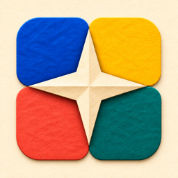

Privacy PolicyGizlilik Politikası
Pocket Atlas · Effective 26 November 2026
In short
Pocket Atlas does not collect any personal data. There are no accounts, no analytics and no advertising trackers, and nothing you do in the game is sent to us or to anyone else.
Your progress and settings
Your levels, scores, daily pictures and settings are stored on your device. If you are signed in to iCloud, a copy is also kept in your own iCloud account so your progress follows you to your other devices. That copy is stored and managed by Apple under the Apple Privacy Policy; we cannot see or access it. Deleting the game removes the data on your device.
Notifications
If you turn on the daily reminder, the game schedules a notification on your device. It is created and shown by your device alone; nothing is sent to us.
Purchases
Purchases are handled entirely by Apple through the App Store. We never receive your payment details or your name.
Advertising
Pocket Atlas currently shows no ads from third parties. If this changes, we will update this policy before the change reaches the game, and describe what is collected and why.
Children
We do not collect personal data from anyone, including children.
Changes
If this policy changes, the new version will be published on this page with a new date.
Contact
Questions about privacy: pocketatlasgame@gmail.com
Pocket Atlas · Yürürlük tarihi: 26 Kasım 2026
Kısaca
Pocket Atlas hiçbir kişisel veri toplamaz. Hesap, analiz ya da reklam takibi yoktur; oyunda yaptığın hiçbir şey bize ya da başkasına gönderilmez.
İlerlemen ve ayarların
Bölümlerin, skorların, günlük resimlerin ve ayarların cihazında saklanır. iCloud'a giriş yaptıysan, ilerlemenin diğer cihazlarına da gelmesi için bir kopyası kendi iCloud hesabında tutulur. Bu kopya Apple Gizlilik Politikası kapsamında Apple tarafından saklanır ve yönetilir; biz göremeyiz ve erişemeyiz. Oyunu silmek cihazındaki verileri de siler.
Bildirimler
Günlük hatırlatmayı açarsan oyun cihazında bir bildirim planlar. Bildirimi yalnızca cihazın oluşturur ve gösterir; bize hiçbir şey gönderilmez.
Satın alımlar
Satın alımlar tamamen Apple tarafından App Store üzerinden yürütülür. Ödeme bilgilerin ya da adın bize hiçbir zaman ulaşmaz.
Reklamlar
Pocket Atlas şu anda üçüncü taraflara ait reklam göstermiyor. Bu değişirse, değişiklik oyuna gelmeden önce bu politikayı güncelleyip neyin, neden toplandığını açıklayacağız.
Çocuklar
Çocuklar dahil hiç kimseden kişisel veri toplamıyoruz.
Değişiklikler
Bu politika değişirse yeni hali yeni bir tarihle bu sayfada yayınlanır.
İletişim
Gizlilikle ilgili soruların için: pocketatlasgame@gmail.com